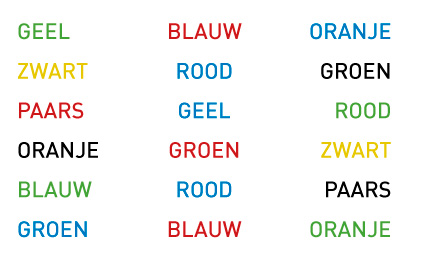

Hoe ons brein voor de gek houdt
Hoofdstuk 3
- 3.1 Het brein als theater
- 3.2 Een strijd in het theater
- 3.3 Hogere vorm van taalgebruik
- 3.4 Het brein als creatief medium
Alles wat we over de fysieke wereld weten, inclusief de kennis over ons eigen lichaam, komt via ons brein. Ons brein creëert actief beelden van de wereld. Hoe creatief dat brein is, wordt weerspiegeld met het feit dat die beelden soms volledig vals zijn. Een schokkende ontdekking, want hoe komen we nu in hemelsnaam ooit te weten dat wat ons brein ons over de wereld vertelt waar is? Dit is ook een verassende ontdekking, want ons brein lijkt de dingen meestal toch bijzonder goed op een rijtje te krijgen. Het creëert zijn beelden van de wereld vanuit de zeer beperkte en onvolmaakte signalen die onze zintuigen doorgeven. Zo is het visuele beeld op ons netvlies slechts tweedimensionaal en toch zorgen onze hersenen voor een levendige ervaring van een wereld vol voorwerpen in de driedimensionale ruimte.
3.1 Het brein als theater
Wat je ziet, komt vaak niet overeen met de werkelijkheid. Het brein heeft namelijk trucjes ontwikkeld om het gezichtsvermogen een handje te helpen. Met optische illusies houdt ons brein ons aardig voor de gek. De optische illusies zijn het meest bekend. Het zijn voorbeelden van zelfbedrog, van gissen en missen. We zien met de ogen, maar we interpreteren met de hersenen. Dat geeft wel eens een heel ander resultaat. Een heel simpel voorbeeld is de olifant op afbeelding 1. Deze olifant is onmogelijk, omdat je brein van een getekend 2D-afbeelding een 3D-beeld probeert op te bouwen. De olifant heeft weliswaar vijf voeten, maar tussen de bovenkant van zijn poten en lichaam zijn vier aanhechtingspunten. De lijnen daartussen zorgen voor de verwarring. Als je ze van boven naar beneden volgt, lijken ze de contouren van de poten te vormen, maar eenmaal beneden blijken ze de lege ruimtes tussen de voeten te zijn.Een ander bekend klassiek voorbeeld is te zien op afbeelding 2. Welke lijn is groter? Je zou denken dat de onderste lijn groter is dan de bovenste. Dit heeft te maken met dat de uiteinden van de bovenste lijn naar binnen toe trekken en die van de onderste lijn naar buiten, waardoor de lengte voor het oog vergroot wordt. Afbeelding 3 is een typisch voorbeeld van een theater waarbij er van alles gebeurt zonder dat het werkelijk is. Als je deze foto bekijkt, lijk het wel of er steeds grijze vierkantjes op de kruispunten je ogen komen bedriegen. Dit heeft puur te maken met de onscherpe zij-kanten van je ooghoeken. Als je je focust op één punt dan zie je geen grijze stip op die plek, terwijl je in je ooghoeken ze wel tevoorschijn ziet komen. Wanneer je in staat bent om die focus te krijgen voor een bepaalde tijd, zullen de grijze vierkantjes daadwerkelijk verdwijnen.
Afb 1: Hoeveel poten heeft de olifant?
Afb 2: Welke lijn is groter
Afb 3: Rooster bedrog
3.2 Een strijd in het theater
Soms doe je zo hard je best om ervoor te zorgen dat je in staat bent om je brein de baas te zijn. Dit is in sommige gevallen echter een ware kunst. Op afbeelding 4 staan kleuren beschreven in een andere kleur dan wat het oog je laat zien. Het is de bedoeling dat je zo snel mogelijk kan vertellen welke kleur je ziet en niet wat er staat. Het ligt op je puntje van je tong en toch gaat het fout. Je rechterhersenhelft probeert de kleur te zeggen, maar je linkerhersenhelft wil het woord zelf lezen. Afb 4: Kleurentest
Een echt typisch voorbeeld van een bizarre gewaarwording is te zien op film 1. Hier is te zien dat niet alles is wat het lijkt te zijn. Een rechte stoel en een verbogen stoel. Hoe kan dat? De constructie van de stoel en de manier van fotograferen is geniaal gedaan. De zogenaamde verbuiging die je rechts ziet, is slechts een rechtopstaande verhoging waar je met je kont tegen aan zit. Een soort extra leuning. Dit is echter op het eerste gezicht niet zichtbaar. Dit heeft te maken met dat de man onderuit gezakt zit en dus niet tegen de zogenaamde verbuiging aan zit. Door de schaduw en dezelfde kleur hout is die verhoging niet te zien.

Film 1: Theater met een stoel
Er zijn zoveel voorbeelden van hoe ons brein ons in de maling neemt. Ik wil dit hoofdstuk afsluiten met film 2. Je ziet een ballerina pirouettes draaien, maar welke kant draait ze op? Volgens sommige mensen draait de danseres met de klok mee, anderen zweren dat ze juist de andere kant op draait. Volgens het bijbehorende verhaaltje heeft dat te maken met je hersenen. Als je vooral je rechterhersenhelft gebruikt, zou je de ballerina naar rechts zien draaien. Wanneer je linkerhersenhelft dominant is, zou ze juist naar links dansen – dus tegen de klok in. Het is een strijd tussen je linker- en je rechterhersenhelft. Al is de Amerikaanse neuroloog Steven Novella het hier niet mee eens. Hij zegt hierover: ‘Natuurlijk hebben we een linker- en een rechterhersenhelft, maar die gebruikt iedereen door elkaar heen.” Dat is ook zo, maar het heeft ieder wel een dominante hersenhelft en welke dat is, is bepalend voor het zien van de draairichting van de ballerina. Het heeft ook te maken met je dominante oog. Als je haar juist de andere kant op wilt zien draaien dan vraagt dit volledige gebruik van je focus. Wanneer je niet 100% gefocust bent, dan zal het niet lukken. Eén ding mag duidelijk zijn: ons brein kan ons valse informatie geven.